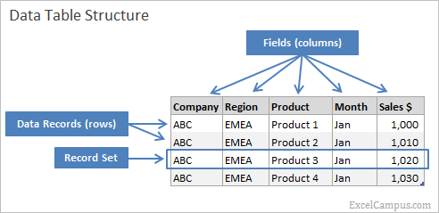
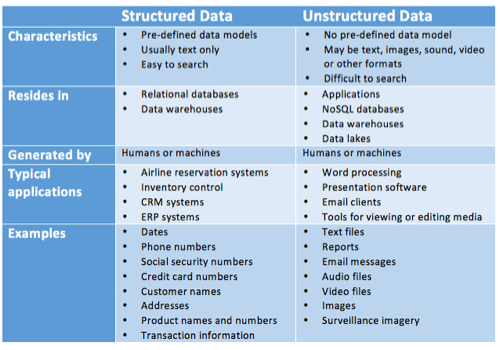
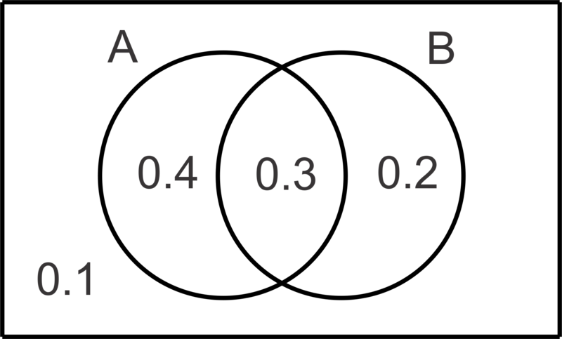
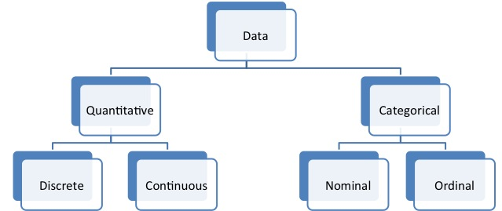
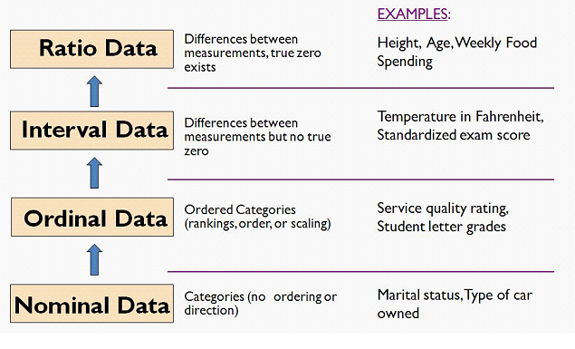
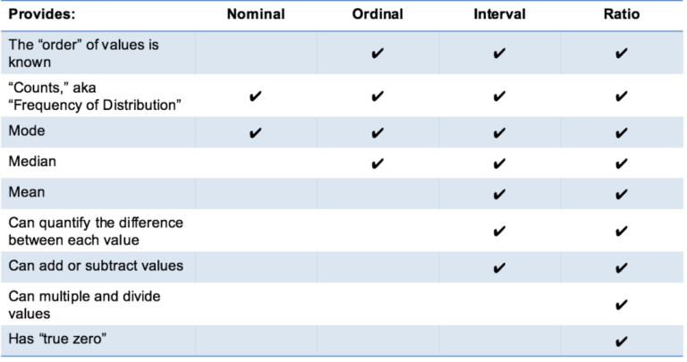
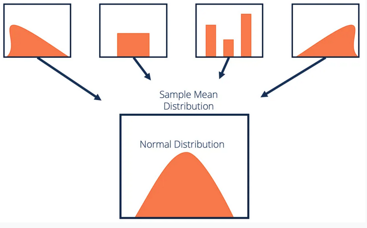
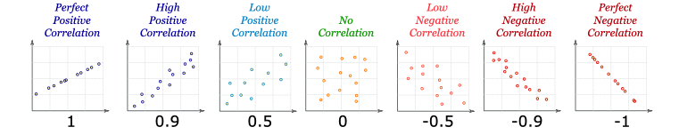

R for Statistics for Beginners
Hussain Alsalman
@Arabian_Analyst
https://ArabianAnalyst.com
2021-04-12
ArabianAnalyst@gmail.com
Agenda
- Quick Intro to R
- Get very familiar with R programming and syntax
- All basic R
- Beyond Basics
- Get introduced to ggplot2
- Statistics, Data Wrangling & Simple Linear Regression
- Introduction about Data & Statistics
- Data Exploratory using statistical techniques
- Data Pre-processing
- Linear Regression
Foundations of R Programming
What is R?
R is a free language and environment for statistical computing and graphics. You can perform a variety of tasks using R language. Some are as follows
- Exploring and Manipulating Data
- Building and validating predictive models
- Applying machine learning and text mining algorithms
- Creating visually appealing graphs
- Building online dynamic reports or dashboards
Command Line Interface for R.
- R is an engine that can be run through CLI.
- R comes with simple GUI but it is very primitive (Mac & Windows only).
- You can run multiple instances of R with no problem.
Let’s learn how to
- Set our working directory
- Save our workspace
- Load our workspace
- Display existing objects
- Remove objects
- Save our history
R Basics
Let’s learn how to
- Basic Math
- Variables
- Data Types
- Vectors
- Calling Functions
- Function Documentation
- Missing Data
- Pipes
R beyond basics
R beyond basics
- Other data Types (Data.Frames, Lists, Matrices, Arrays)
- Writing Functions
- Control Statements & Loops
- Reading Data into R
- CSV, Excel
- R Binary data
- Graphing in R
- Base Graphs
- ggplot2
Introduction to Statistics
What are the types of data?
Structured data
Data that has pre-defined format. We mainly refer to the data that can be stored in tabular format.

Structured Data
Advantages:
- Universally understood
The factual nature of structured data allows users of all skill levels to understand the meanings and relationships behind the data itself.
- Transferable to data tools
Many data tools thrive on structured data, making it easier for you to analyze.
- Easily digestible for data programs
Machine learning algorithms can easily crawl structured data fields, allowing for simplified data querying and manipulation.
- Space savings
Historically, businesses store data in structures to keep the space required at a minimum.
Structured Data..(continued)
Disadvantages:
- Storage inflexibility
Your structured data is generally stored in data warehouses or relational databases, both of which have very stringent structures. If you need to change your data needs, the likelihood is you’ll have to update all of your structured data.
- Limited use cases
Pre-defined, structured data can only be used for its intended purpose, which causes some inflexibility.
What are the types of data? ..(continued)
Unstructured data
Those include everything else, from texts on websites and social media to uploaded videos and music.
Unstructured Data
Advantages:
Wider use cases
Without any pre-definition, unstructured data can be used for more than one intended purpose.
Flexible formatting
Unstructured data can be stored in a variety of formats.
Easy storage
Because of the onset of unstructured data – due to modern demands and the internet – storage for this type of data is now easier and cheaper.
More data, more insights
Although harder to analyze, your organization most likely has more unstructured data than structured. This data could hold brilliant insights that could amplify your competitiveness.
Unstructured Data..(continued)
Disadvantages:
Difficult to prepare and analyze
Unless you have an experienced team of data scientists, unstructured data will remain inaccessible. Your average business user will not be able to understand its undefined format or draw value from it.
It requires specific data tools
Most data tools, such as Excel, can’t handle unstructured data. This means your business will have to search for a specific data management tool to manipulate the data.
Structured vs Unstructured Summary

Dealing with unstructured data is beyond the scope of this lecture So we will focus on Structure data tonight
Introduction about Statistics
Before we start, we need to mention that Statistics is divided mainly into two parts.
Descriptive Statistics (Lecture Focus)
This branch focuses on describing the Data without making and conclusions
Inferential Statistics
This branch is all about making conclusions. It takes sample from the population and try to make statistical tests to generalize the idea.
Random Sampling and Sample Bias
Sample A sample is a subset of data from a larger data set; statisticians call this larger data set the population
Random sampling Random Sampling is a process in which each available member of the population being sampled has an equal chance of being chosen for the sample at each draw
Explination

Sample Bias
Bias
Statistical bias refers to measurement or sampling errors that are systematic and produced by the measurement or sampling process. An important distinction should be made between errors due to random chance and errors due to bias
Sample Bias.. (continued)
The story of Franklin Roosevelt and Alf Landon election race in 1936
- Literary Digest vs George Gullup
Sample Bias

Probability
It is numerical representation of how likely for an event to occur.

Bayes Theorm
\[ P(A|B) =\frac{P(B |A) * P(A)}{P(B)} \]
Two schools of thoughts
Frequentest interpretation: hands-on exercise probability of a random event denotes the relative frequency of occurrence of an experiment’s outcome, when the experiment is repeated indefinitely.
- Law of large numbers
Bayesian interpretation: hands-on exercise includes expert knowledge as well as experimental data to produce probabilities. The expert knowledge is represented by some (subjective).
Data Exploratory using statistical techniques
Types of Data

Are all data equal?

Are all data equal?

Categorical Data
In many cases especially in classification problem this is usually our target variable.
We can describe categorical data by
- Counts
- Percentages
However, they are very useful in analytic tasks such as
- Grouping
- Filtering
M&M samples Hands-on exercise
Quantitative Data
Those are exact variables and open doors for many statistical analysis. We can describe quantitative data by
Measure of centrality Hands-on exercise
- Mean
- Median
- Mode
Measure of Variability Hands-on exercise
- Range
- Interquartile Range (IQR)
- Standard Deviation
- Variance
Quantitative Data..(continued)
Shape Hands-on exercise
- Kurtosis
- Skewness
- Normal Curve or Bell Curve
Outliers
Centeral Limit Theorm
if you have a population with mean μ and standard deviation σ and take sufficiently large random samples from the population with replacement , then the distribution of the sample means will be approximately normally distributed

More Statistical concepts
How do we measure the relationship between variables?
We use covariance (not common) or correlation (most common)
Correlation vs Covariance
Covariance : \(Cov(x,y) = \frac{\sum (X-\bar{X})(Y-\bar{Y})}{N}\)
Correlation : \(r = \frac{1}{n-1} \sum (\frac{X-\bar{X}}{s_{x}}){(\frac{Y-\bar{Y}}{s_{y}})}\)
Correlation Types

Data Preprocessing
Why do we preprocess data?
- Fields that are obsolete or redundant
- Missing values
- Outliers
- Data in a form not suitable for the machine learning models;
- Values not consistent with policy or common sense.
Common Tasks in Data preprocessing
- Data cleaning
- Handling missing data
- Identify misclassificaitons
- Graphically identify outliers
- Transformation data to work better with ML models
- Normalize the data
Data Preprocessing Continuation
- Graphical Methods to identify outliers
- Normalizing data
- Min–max normalization
- Transformation to achieve normality
Other considerations - Data Preprocessing
Categorical variables : we create dummy variables for categorical variables that are Nominal
Example: How to encode Maritul Status? given that we have 4 categories {Married, Single, Divorced, Seperated}
| CustomerID | Income | Marital Status |
|---|---|---|
| 10001 | 40000 | Married |
| 10002 | 63000 | Single |
Other considerations - Data Preprocessing
We simply create dummy variables for n-1 of all the classes for the categorical variable.
| CustomerID | Income | Single | Married | Divorced |
|---|---|---|---|---|
| 10001 | 40000 | 0 | 1 | 0 |
| 10002 | 63000 | 1 | 0 | 0 |
Other considerations - Data Preprocessing
Categorical variables : we can substitute classes with numerical for variables that are Ordinal
Example
| Class | value |
|---|---|
| strongly disagree | 1 |
| disagree | 2 |
| neutral | 3 |
| agree | 4 |
| strongly agree | 5 |
Other considerations - Data Preprocessing
Binning Numerical Variables : Some algorithms prefer categorical variables therefore, we need to perform binning
- Equal width binning
- Equal frequency binning
- Binning by clustering
- Binning based on predictive value
note:
- 1 & 3, does not consider the target variable.
- 1 can be easily influenced by outliers
- 2 has an assumption that every class is equally likely ( most of the time unrealistic )
- 3 & 4 are usually preferred.
Other considerations - Data Preprocessing
Removing Variables That Are Not Useful
- Unary or almost unary
Reasoning :
having fixed or almost fixed variable does not help explain the variability in the target variable.
Other considerations - Data Preprocessing
Variables That Should Probably Not Be Removed
- Variables with 90% or more missing data
- Variables that are strongly correlated
Reasoning :
- Before deleting the whole variable with a lot of missing data, we need to investigate if there is a pattern in the missingness of those variables. We might create a flag variable that is useful.
- if two variables are correlated some analyst just remove one of the variables, however, this might lead to lost of important information. It is best to use principle component analysis instead.
Try at Home excercise
What can you tell about this dataset
- Try making histograms of continuous data
- Is there a relationship between TB and TR
- what is the average of total rooms?
Do you suspect outliers?
US Household Data
Example US Households data.
- MHV : median house value
- MI : median income
- HMA : housing median age
- TR : total rooms
- TB : total bedrooms
- P : populatio
- H : households
- LAT : latitude
- LON : longitudeLinear Regression
Interactive Session Linear Regression